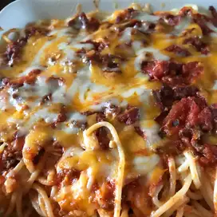

Baked Spaghetti Recipe

Baked Spaghetti Finished
Ingredients
- 1 (16 ounce) package spaghetti
- 1 pound ground beef
- 1 onion, chopped
- 2 eggs
Step by Step
- Preheat the oven to 350 degrees F (175 degrees C). Lightly grease a 9x13-inch baking dish.
- Bring a large pot of lightly salted water to a boil. Cook spaghetti in boiling water, stirring occasionally, until tender but firm to the bite, about 12 minutes. Drain.
- Heat a large skillet over medium heat. Cook and stir beef and onion in the hot skillet until meat is browned and onion is soft and translucent, about 7 minutes. Drain excess oil from the pan. Stir in spaghetti sauce and seasoned salt.
- Whisk eggs, Parmesan, and butter in a large bowl. Add spaghetti and toss to coat.
- Place 1/2 of the spaghetti mixture in the prepared dish. Top with 1/2 of the cottage cheese, 2 cups mozzarella, and 1/2 of meat sauce. Repeat layers. Cover with aluminum foil.
- Bake in the preheated oven for 40 minutes. Remove the foil and sprinkle with remaining mozzarella. Continue to bake until cheese is melted and lightly browned, 20 to 25 minutes.